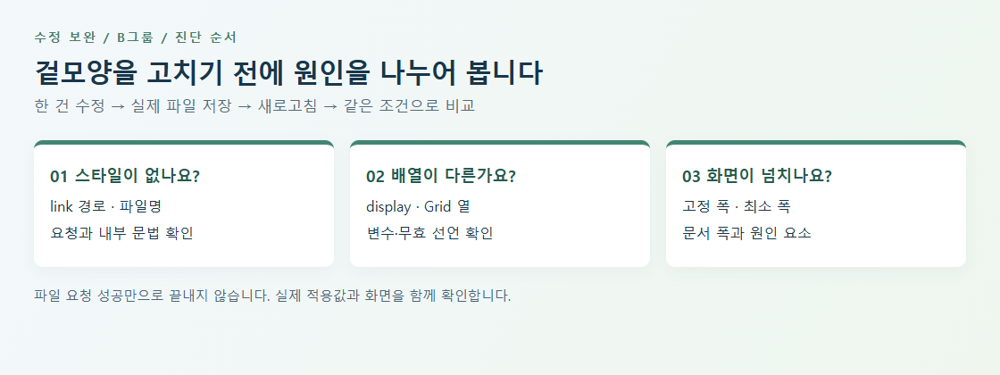

수정 보완 | B그룹
1. 학습 목표와 자기 피드백 읽는 법
CSS 파일을 나누고 오류 원리를 설명했더라도 실제 제출 파일에 수정이 남아 있지 않으면 화면은 달라지지 않습니다. 자기 피드백에서 확인한 항목만 골라 ‘설명→실제 변경→같은 조건 확인’으로 연결합니다. 이미 고친 부분은 보존하세요.
| 관찰 항목 | 연습 목표 | 증빙 |
|---|
| CSS 미적용 | 경로와 문법부터 복구 | Network와 실제 스타일 |
| 원인 설명만 있음 | 원인 파일에서 한 건 수정 | 수정 전후 선언 |
| 테스트 미완성 | 실측으로 결과 확정 | 너비·값·화면·판정 |
| 제출 불일치 | 코드와 보고서 연결 | HEAD·개별 PR·ZIP |
평가 범위는 MALBON 페이지의 8개 CSS 분리와 핵심 결함 수정, 지정 5개 너비 검사 및 Git 기록입니다. 이 지원자료의 카드 실습은 독립 예시로, 평가 정답 전체를 제공하지 않습니다.
수정 보완 | B그룹
2. 어디부터 볼지 정하는 진단 흐름

- 스타일이 거의 없다: HTML link와 실제 폴더·파일명을 대조한 뒤 Network 요청을 확인합니다.
- 파일 요청은 성공하지만 일부 규칙이 없다: 닫히지 않은 주석·중괄호·잘못된 선언을 Styles와 실제 적용값으로 확인합니다.
- 데스크톱 배열이 다르다: display와 grid-template-columns를 함께 봅니다.
- 작은 화면이 넓게 남는다: body와 상위 요소의 최소 폭·고정 폭을 찾습니다.
한꺼번에 모두 바꾸면 원인과 결과를 구분하기 어렵습니다. 연습 사본에서 한 건 수정→저장→새로고침→같은 너비 비교를 반복하세요. 개발자 도구의 임시 수정만으로 끝내지 말고 실제 파일에 반영합니다.
수정 보완 | B그룹
3. 8개 CSS 파일과 로드·파싱 확인
연결 순서를 실제 HTML에서 읽고 각 파일이 존재하는지 확인합니다. normal→root→component→btn_cpn→item_cpn→layout_cpn→style→media 순서가 이번 평가의 기준입니다.
| 파일 | 역할 | 한 가지 질문 |
|---|
| normal.css | reset·기본 요소 | 기존 의미 구조·포커스 보존 |
| root.css | 공통 원시 변수 | 선언 이름과 범위 |
| component.css | 프로젝트 의미 변수 | 주석·문법과 실제 적용 |
| btn_cpn.css | 버튼·아이콘 | 링크와 버튼 역할 |
| item_cpn.css | 개별 항목·유틸리티 | 공통 항목 책임 |
| layout_cpn.css | 컨테이너·Grid | 너비와 배치 |
| style.css | 페이지별 영역 | 중복 연결·덮어쓰기 |
| media.css | 화면 구간별 변경 | 기본 규칙과 연결 |
확장자가 숨겨져 .css.txt가 되지 않았는지, 파일명 대소문자·철자·상대 경로가 맞는지 확인합니다. 파일 요청 성공과 내부 규칙 적용은 서로 다른 확인입니다. 중복 style.css가 media.css 뒤에 다시 연결되면 같은 우선순위의 기본 규칙이 재적용될 수 있습니다.
수정 보완 | B그룹
4. 변수·Grid·고정 폭을 분리해서 보기
lab/index.html은 의도적으로 결함을 넣은 작은 카드 연습입니다. 연습 파일은 2개뿐이며 평가의 8개 CSS 구조를 대체하지 않습니다. styles.css에서 변수 선언/사용, Grid 열 문법, 최소 폭을 각각 찾아 보세요.
/* 독립 연습의 관찰 대상 */
:root { --panel-width: 900px; }
.practice { max-width: var(--pannel-width); }
.cards {
display: grid;
grid-template-columns: repeat(3 1fr);
}
body { min-width: 900px; }
| 질문 | 확인할 곳 | 수정 뒤 관찰 |
|---|
| 변수 이름이 같은가? | 선언부와 var() 사용부 | max-width 최종값 |
| Grid가 유효한가? | Styles 문법·display·열 정의 | 열 수와 배치 |
| 폭이 줄어드는가? | body와 상위 요소 최소 폭 | 작은 화면 문서 폭 |
원래 과제에 적용할 때는 자기 파일과 선택자를 다시 찾습니다. Flex로 바꾸거나 미디어쿼리에 같은 규칙을 계속 덧붙여 화면만 맞추기보다 원인 선언을 고치세요. 숨김 처리로 가로 넘침을 감추지 않습니다.
수정 보완 | B그룹
5. 수정 전후를 같은 너비로 재검증
5개 지정 너비에서 헤더부터 푸터까지 봅니다. 실습 예시의 카드 열 수는 평가의 상품 열 수와 다르므로 자신의 과제 요구사항과 비교하세요.
| 너비 | 확인 | 기록 |
|---|
| 1920px | 컨테이너 최대 폭·중앙 정렬, 기본 열 | Styles·Computed·전체 화면 |
| 1600px | 경계 여백·잘림·겹침 | 컨테이너와 실제 내용 폭 |
| 1024px | 내비게이션과 상품 배열 변화 | 열 수·문서 가로 넘침 |
| 768px | 카드·컬렉션 재배치 | 작은 화면 읽는 순서 |
| 480px | 가로 넘침·글자·푸터·조작성 | 폭 수치·Tab 포커스·화면 |
scrollWidth와 clientWidth의 차이가 있으면 너비를 강제하는 요소를 찾습니다. 두 값이 같더라도 화면 잘림·겹침이 없는지 확인합니다. Console·Network와 링크/버튼 역할, 이미지 설명, 키보드 포커스도 자기 코드 위치와 연결하세요.
테스트 표의 [통과/실패]나 [링크]를 그대로 두지 않습니다. 실제 결과는 통과·실패로 확정하고 검사하지 않은 항목은 미확인과 이유를 적습니다. 보고서 마지막 문장도 표의 실제 결과와 일치해야 합니다.
수정 보완 | B그룹
6. 작은 수정과 실제 제출을 연결하는 실습
- 실습양식 01: 실제 파일 경로·8개 요청·문법·중복 링크를 점검합니다.
- 실습양식 02: 결함 한 건의 선택자·원인·수정·같은 너비 전후값을 기록합니다. 필요한 결함 수만큼 양식을 복사합니다.
- 실습양식 03: 5개 너비와 접근성·Network·Console 결과를 채웁니다.
- 실습양식 04: 최종 브랜치·커밋·개별 PR·ZIP을 연결합니다.
실제 평가의 커밋 요구를 지키면서 변경 이유가 드러나는 작업 단위로 기록합니다. 시간이나 ‘커밋’만 적기보다 수정 대상을 설명하세요. 존재하지 않는 해시·PR을 예상해 쓰지 않습니다.
git status --short
git rev-parse HEAD
git log --oneline -5
예: 경로 확인, 한 결함 수정, 반응형 검증, 보고서 증빙 추가처럼 실제 한 작업의 목적을 기록합니다. 독립 예시는 로컬 연습이며 원격 저장소 변경을 자동으로 요구하지 않습니다.
수정 보완 | B그룹
7. 완료 확인과 다음 학습
| 확인 기준 | 완료 설명 |
|---|
| 실제 반영 | 보고서에 적은 수정이 최종 파일에 있음 |
| 원인 설명 | 어느 선언이 왜 문제인지 말할 수 있음 |
| 동일 조건 비교 | 전후 너비·선택자·캡처가 연결됨 |
| 사실대로 기록 | 실패·미확인과 남은 작업을 구분함 |
| 최종 제출 | 보고서·HEAD·PR·ZIP이 같은 상태임 |
다음에는 자신이 자주 놓친 한 항목을 점검표 맨 앞에 두고 다른 작은 CSS 수정에 반복 적용해 보세요. 파일 분리와 원인 분석의 강점을 실제 변경·재검증까지 연결하면 작업을 더 안정적으로 마무리할 수 있습니다.
수정 보완 | B그룹
8. 참고자료와 적용 활동
한국어 무료 공개 자료입니다. 안내한 범위를 읽거나 보고 자신의 결과물에 적용하세요.
생활코딩 · egoing
CSS 코드의 재사용
학습 범위: 공개 본문의 2.html 소스에서 외부 style.css 연결 부분. 영상 시청은 선택이며 이 자료는 본문 코드 확인에 근거합니다.
읽고 할 일: 내 HTML에서 CSS 경로와 중복 연결을 찾아 파일·역할·실제 적용을 연결해 적습니다.
Google · Chrome for Developers
CSS 기능 참조
학습 범위: CSS 보기, 잘못되었거나 재정의된 CSS, 요소에 실제로 적용된 CSS만 보기 절.
읽고 할 일: 같은 요소의 Styles 원인 선언과 Computed 최종값을 나란히 기록합니다.
MDN Web Docs
사용자 지정 CSS 속성 사용하기 (변수)
학습 범위: 기본 사용법, 사용자 지정 속성 대안 값, 유효하지 않은 변수를 만날 때의 한국어 공개 설명.
읽고 할 일: 변수 선언 이름과 사용 이름을 한 쌍으로 찾고 오타가 계산값에 미치는 영향을 설명합니다.
GitHub Docs
끌어오기 요청 만들기
학습 범위: 한국어 웹 브라우저 절의 base·compare 선택과 제목·설명 작성. 실습은 자신의 저장소 권한 범위에서 수행합니다.
읽고 할 일: 수정 브랜치와 대상 브랜치의 차이를 확인하고 실제 개별 PR에 변경 이유·검증 결과를 연결합니다.